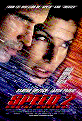
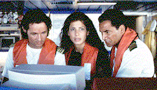

|
|
|
| Movie Credits | Buy It! |
Speed 2: Cruise Control
Review by Carrie
Gorringe
Posted 13 June 1997
|  | Directed by Jan De Bont Starring Sandra Bullock, Jason Patric, Screenplay by Randall McCormick |
Our lady of the holy rollers, Annie Porter (Bullock), is back for another run at love and action. She’s still hell on wheels, and she has a new love. Jack is out of the picture for good, because, as Annie informs her increasingly-pale driving instructor, she disliked the fact that Jack was too "extreme." Current boyfriend Alex Shaw (Patric), a municipal beach cop whose most challenging assignment is apprehending pickpockets along the boardwalk, suits her far better. Alex, however, has been telling his lady fair a few lies of a slightly grayish hue concerning his profession; he is a member of the LAPD SWAT team, with a penchant for high-speed motorcycle chases. When the two of them run into each other – at ninety m.p.h. or so – Annie discovers the ruse, and reacts angrily. Sensing an opening in her tirade, Alex presents her with two tickets for a cruise aboard the Seabourn Legend, with the usual line of "getting to know each other better." So off they go for sun and fun, not realizing that there are some unexpected changes to the itinerary. A disgruntled former employee named Geiger (Dafoe) has other plans for the ship. He takes over its computer navigation and operational systems, threatening everyone’s life in the process. Of course, Alex is not going to let this happen and, over Annie’s weary protests, Speed 2 gets under way.
Or, at least, the film takes a reasonable stab at it, although it never quite succeeds in generating any suspense. The same weaknesses that plagued De Bont’s Twister are here. Anyone who was looking for more than bovine projectiles and gee-whiz special effects last year and didn’t find anything could see the flaws coming this year with no Doppler radar required. Like Twister, Speed 2 is far too slackly paced and attempts to cover up its weak, highly derivative, script with action sequences so unfocused that they look like they have been shot and edited in the nearest Cuisinart. Trying to get a fix on what’s happening in certain shots is next to impossible; the elements contained aren’t immediately visible and any tension that exists ensues from confusion. When audience members have to piece together not only what happened but also what and who was involved in a given sequence, the rot has begun to set in. De Bont has obviously done a stint at the Michael Bay School of Opaque Action Sequences. Bay, responsible for the final Simpson-Bruckheimer extravaganza known to salivating Hollywood executives as The Rock, created a chase sequence (featuring, if you’ll recall, Nicolas Cage and a yellow Ferrari) which was replete with similar shooting and editing rhythms and the same sense of annoying visual ambiguity. Fortunately for Bay, he made this mistake only once in The Rock. Unfortunately for De Bont, nearly every action sequence in Speed 2 has that same look; audiences can’t feel suspense when they can’t see what they’re supposed to be fearing. I realize that tension and terror are created visually by what Edmund Burke defined as a "judicious obscurity in some things," but in this case, De Bont has substituted "obscurantism" for "obscurity." His ambiguity is utterly promiscuous, resembling nothing so much as the visual equivalent of whiplash. There’s nothing more monotonous than being sated with too much excitement, especially if it’s the wrong kind.
Surprisingly, director De Bont takes credit for the film’s most unoriginal aspect:
the premise of placing the film’s action on a cruise liner. His rationale: "I
thought it was something that audiences hadn’t seen before."  It probably hasn’t
been – at least in a generation or so, which, in film audience years, corresponds to
about a millenium. Those of us who are still trying to forget the histrionics that
accompanied 1972’s The Poseidon Adventure are not necessarily grateful for De
Bont’s reminders, which come thick and fast at every level of Speed 2. De Bont
gives us all of the disaster-movie motifs, right down to the shrieking passengers and the
prerequisite wise child (Firkins), whose character is carefully constructed (she’s
deaf) and whose situation is made appropriately perilous (she gets stuck in an elevator
with no power) so as to extract the maximum amount of pathos from the audience. Just in
case we’re not sure where the identification lies, De Bont also includes the
requisite hysterical mother (Childs) to let us know that this is a tragic situation.
Unfortunately, the script’s rigid conformity to the rules of the genre gives the game
away; there is no tragedy here. American films are too sentimental to let any precocious
– hence precious -- child die. Smart adults can die, especially if they are
smart-asses, but let one little innocent angel bite the dust and the film is done for. All
this film needs is a priest who’s lost his faith, and it would reside firmly in the
land of kitsch known as Irwin Allen territory.
It probably hasn’t
been – at least in a generation or so, which, in film audience years, corresponds to
about a millenium. Those of us who are still trying to forget the histrionics that
accompanied 1972’s The Poseidon Adventure are not necessarily grateful for De
Bont’s reminders, which come thick and fast at every level of Speed 2. De Bont
gives us all of the disaster-movie motifs, right down to the shrieking passengers and the
prerequisite wise child (Firkins), whose character is carefully constructed (she’s
deaf) and whose situation is made appropriately perilous (she gets stuck in an elevator
with no power) so as to extract the maximum amount of pathos from the audience. Just in
case we’re not sure where the identification lies, De Bont also includes the
requisite hysterical mother (Childs) to let us know that this is a tragic situation.
Unfortunately, the script’s rigid conformity to the rules of the genre gives the game
away; there is no tragedy here. American films are too sentimental to let any precocious
– hence precious -- child die. Smart adults can die, especially if they are
smart-asses, but let one little innocent angel bite the dust and the film is done for. All
this film needs is a priest who’s lost his faith, and it would reside firmly in the
land of kitsch known as Irwin Allen territory.
If more proof is needed, one need only peruse the psychological profile of the main characters. In between the token innocent and the hysterical passengers, we are treated to the spectacle of Sandra Bullock’s once-gutsy character in a state of extreme evisceration; Annie is now reduced to the level of an action wallflower, whose only role is to persuade Alex to "be careful." Her attempts to take charge are so rare that the real suspense in Speed 2 comes from wondering just when they will occur. Patric, an actor who can charitably be described as charisma-challenged, can’t carry this leaking boat very far; you know an actor and a film are in over their heads when the actor’s only tagline consists of the redundant "I’ll be right back." Of course he is, if only to get the rest of us through to the dreary conclusion. And what is this year’s penchant for epicene sociopaths? Audiences have already been treated to John Malkovich’s fuselage-chewing turn as an airborne nutcase in Con Air and now we have Dafoe acting like he’s drunk too much sea water (or ingested too much copper from those electromagnetic waves that the screenwriters think they can use as a plausible excuse for his behavior). Thin may be in for villains, but Dafoe’s evilly giggling caricature of cruelty grates on the nerves after a while. Moreover, who let the Scotty-impersonator onto the crew? Brian McCardie does his best to be as earnest as possible, but the pop-culture connotations attached to a Scottish burr and a knowledge of technology are just too obvious a "borrowing" to be funny. I kept expecting to see James Doohan show up at any second to stun the impostor with a phaser. Maybe he should apply his weapon to the scurvy knaves who couldn’t remember what elements made the original Speed such great fun, among them an intelligently-written script that allowed the actors involved to overcome the necessary stereotypes, instead of obliging the actors to rely heavily upon them.
Unintentionally (I hope), the connotations of Speed 2’s title are, alas, more than apt; apparently, everyone in this film, from the ground up, has been on cruise control. The special effects, courtesy of ILM and Rhythm and Hues, are reasonably amazing, but not enough so that the film emerges intact from its flaws. Potential attendees may need to take a little snooze control before entering a theater.
Contents | Features | Reviews | Books | Archives | Store
Copyright © 1999 by Nitrate Productions, Inc. All Rights Reserved.